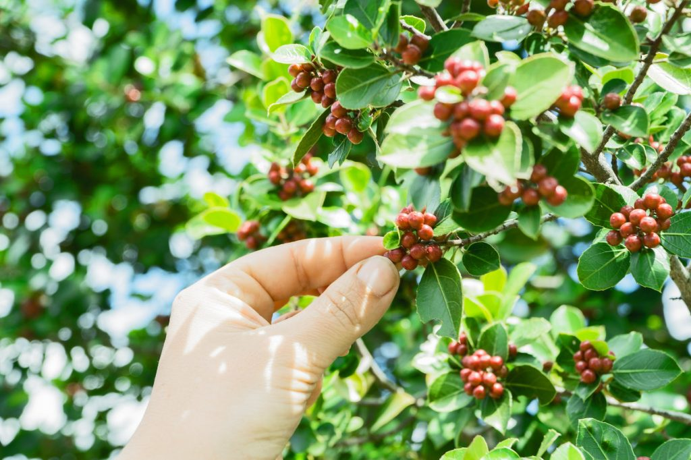
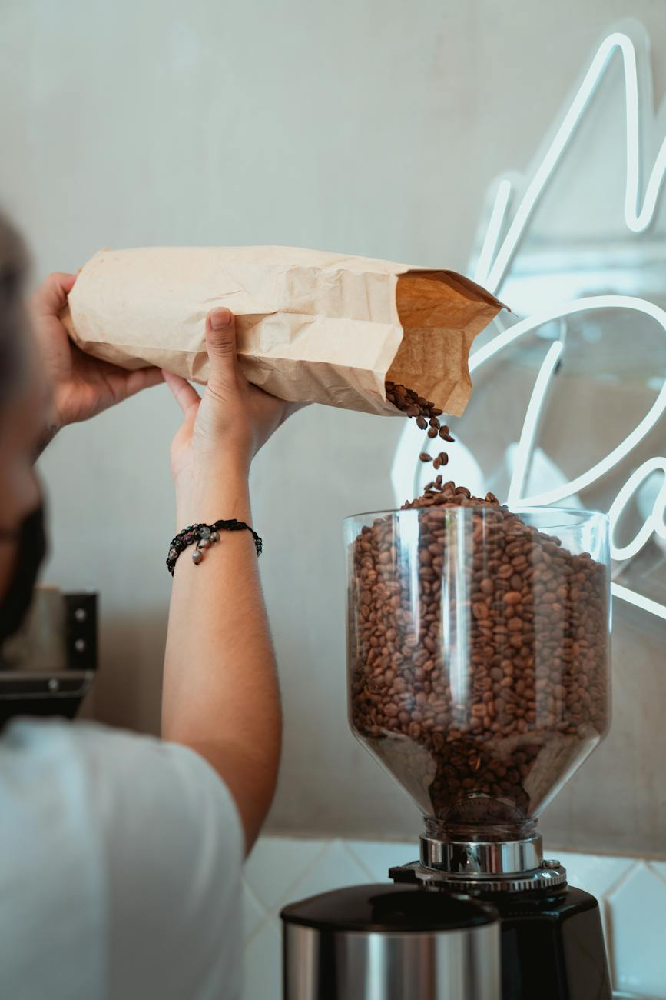

Tentang Kopi
Jika kita bicara tentang kopi, pasti tidak akan ada habisnya.
Banyak sekali yang bisa dibahas tentang kopi. Kopitem ingin
berbagi cerita tentang kopi berdasarkan pengalaman kami berkunjung
ke kebun kopi, berinteraksi dengan petani kopi, dan
sahabat-sahabat kopi lainnya saling berbagi pengalaman, bertukar
pikiran tentang kopi. Berikut adalah kumpulan cerita kami tentang
kopi.
Perbedaan Kopi Hijau (Green Been) dan Kopi hitam

Kopi hijau atau green bean adalah jenis biji kopi yang sedang
jadi trend di banyak tempat belakangan ini. Banyak masyarakat
modern mulai mengkonsumsi kopi hijau, bahkan sudah mulai
disediakan di coffee shop daerah perkotaan karena memang sedang
banyak dicari.
Orang-orang meyakini bahwa kopi hijau ini memiliki lebih banyak
manfaat positif bagi kesehatan bila dibandingkan dengan kopi
hitam biasa. Apakah hal itu benar? Apa sajakah yang membedakan
kopi hijau dengan kopi hitam yang biasa kita temui di pasaran?
Mari kita simak ulasannya.
Perbedaan Kopi Hijau (Green Been) dan Kopi hitam

Kopi Robusta menjadi salah satu jenis kopi yang sangat popular
dan bersanding dengan kopi Arabika. Kedua jenis itu banyak
tersedia di coffee shop dan dibuat menjadi berbagai macam olahan
dan cita rasa beragam. Artikel kali ini akan membahas tentang
cara menyeduh kopi Robusta yang nikmat yang bisa kamu coba.
Kopi Robusta adalah kopi yang sudah mendunia dan memiliki banyak
peminat. Kata Robusta berasal dari kata “robust” yang artinya
kuat. Ini artinya kopi Robusta memiliki cita rasa yang kuat dan
cenderung pahit jika dibandingkan dengan jenis Arabika yang
cenderung asam. Rasa pahit juga menjadi tanda bahwa Robusta
memiliki kandungan gula yang cenderung sedikit. Tidak hanya
kandungan gulanya yang sedikit, Robusta juga memiliki kadar
kafein dan asam yang tinggi. Rasa yang dimiliki Robusta tidak
terlalu variatif, memiliki aroma selayaknya wangi kacang. Cita
rasa pahit Robusta membuatnya banyak digunakan sebagai base
coffee yang nantinya dibuat menjadi cappuccino, latte, dan
sebagainya